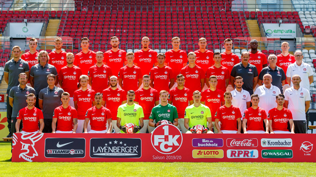
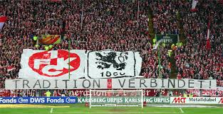

History
Learn More About 1. FC Kaiserslautern's Long and Prestigious History
| Date | Opponent | Score |
|---|---|---|
| Feb. 22 |  Zwickau Zwickau |
0-0 |
| Feb 15 |  Braunschweig Braunschweig |
2-0 L |
| Feb 8 |  P. Munster P. Munster |
1-1 |
| Feb 4 |  Fortuna Fortuna |
2-5 L |
1. FC Kaiserslautern is a soccer team located in Kaiserslautern, Germany who currently play in the 3. Liga, the third division of professional German soccer, under the 2. Bundesliga and Bundesliga.
Originally forming as FV Phönix-Kaiserslautern before changing to its current name in 1933, 1. FC Kaiserslautern was extremely successful during the 1940s and 50s, dominating local teams in the now defunct Oberliga Sudwest, where the team played against other southwestern German teams like 1. FC Nürnburg and Preußen Münster. Once the modern Bundesliga was formed in the 1960s, 1. FC Kaiserslautern competed with other top teams from around Germany.
1. FC Kaiserslautern have won two Bundesliga titles, were UEFA cup semi finalists, and won the German Cup in 1990. Additionally, the team's first relegation occured in 1996, and was one of the last teams to be relegated from the top division of German soccer. The last two teams who hadn't dropped into the lower leagues, 1. FC Köln and Hamburger SV, suffered their first relegations in 1998 and 2018, respectively.
Currently, 1. FC Kaiserslautern play in the third division of German soccer, being relegated from the Bundesliga in 2012 and then being relegated from the 2. Bundesliga in 2018.
The team currently plays in the Fritz-Walter Stadium, named after one of the most prolific players in Kaiserslautern's history, and was constructed in 2006 for the World Cup taking place that same year.